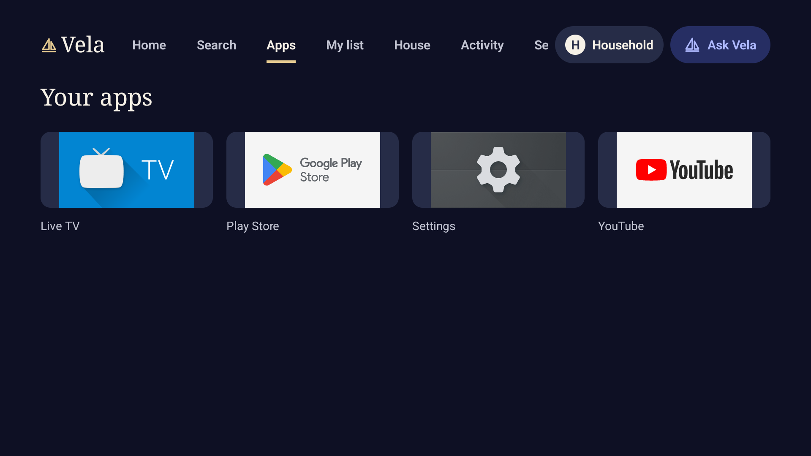
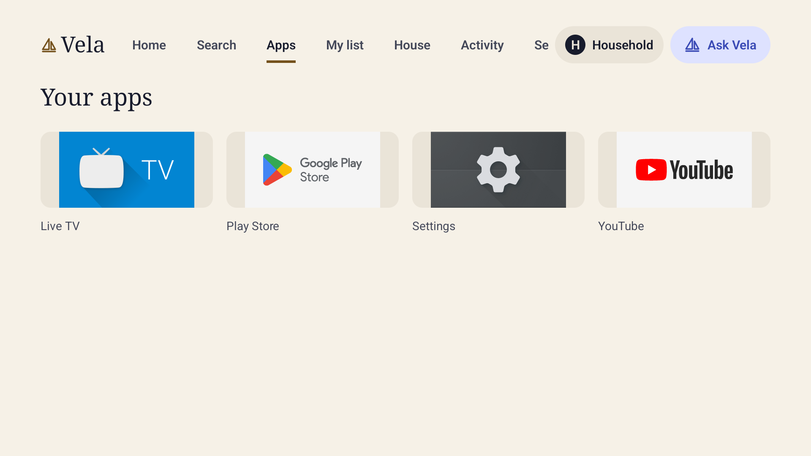
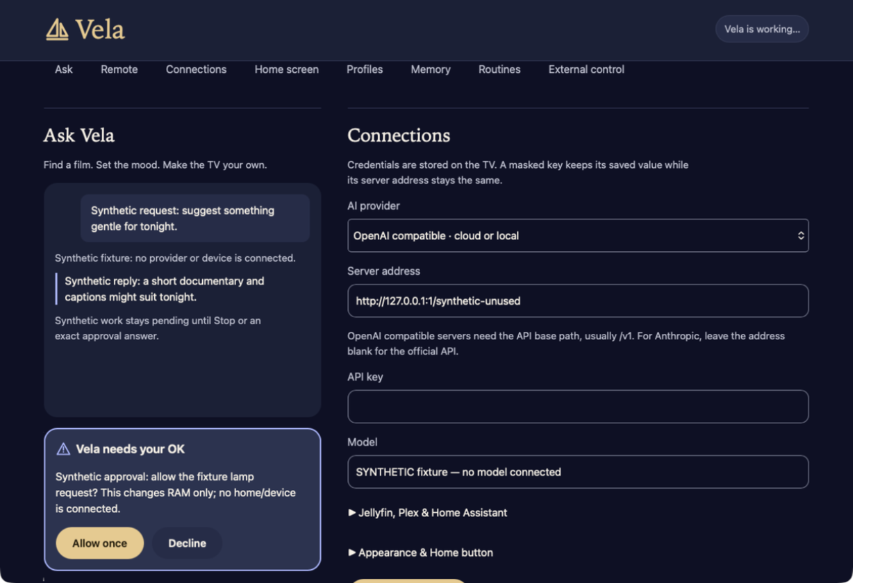
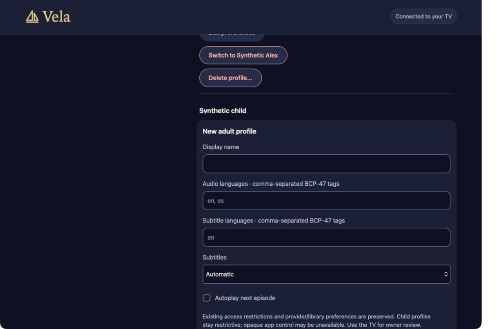

Actual running UI · build 2afc4ab TV: Android 14 Google TV emulator, 1920 × 1080. Phone: Safari on Nate’s Mac mini, public synthetic fixture data.
Home · Night. Current Home, with a local pinned action and installed-app row.Home · Day. The same running Home screen after selecting Day in Vela settings.

Apps · Night. Installed apps on the Google TV emulator.

Apps · Day. Installed apps in the Day palette.Settings · Night. D-pad focus and appearance controls. The clipped Settings tab remains visible.Settings · Day. Day selected through the running app.Profiles · Day. Existing local Household profile. No profile mutation performed.Profile editor · Day. An unsaved new-profile draft; Back dismissed it.Ask Vela · Day. The actual request composer; no model request submitted.

Phone · Approval. Actual Safari capture of the shipped phone page using public synthetic fixture data. Browser chrome cropped out.

Phone · Profile editor. Actual Safari capture after closing and reopening a draft. Browser chrome cropped out.
First visual review. The clipped Settings tab and duplicate request-field focus outlines need correction. Populated media, native playback and TV approval states are still awaiting visual capture. The physical Shield remains paused.